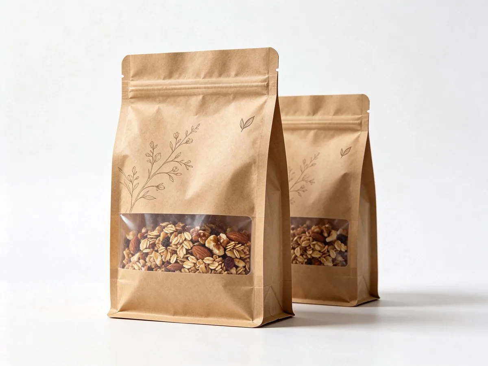

Bakery products fail in opposite directions. Fresh bread needs moisture to escape; biscuits need moisture kept out. Getting that wrong is the difference between a crust that stays crisp and a pack that moulds on the shelf.

Sample shown for format reference only; any branding on the sample belongs to its respective owner. Production uses your own artwork and specifications.
The single most important specification decision in bakery packaging is whether the product should breathe or be sealed. Fresh bread and hot-filled products need controlled venting; biscuits, crackers and dry baked goods need a moisture barrier with no vents at all.
Bread and biscuits fail in opposite ways, which is why one bag structure cannot serve a whole bakery range.
Bread packed warm releases moisture that condenses inside a sealed barrier bag. Micro-perforated or vented film lets the steam out and keeps the crust from going soft and mouldy.
Biscuits, crackers and crisp bread soften when moisture gets in. They need a moisture barrier and no vents, which is the exact opposite of the fresh bread requirement.
Butter, pastry and fried products push fat through a non-resistant inner layer. Greaseproof paper laminates or an oil-resistant film stop the print going translucent.
Cakes, filled pastries and stacked products are damaged by slack packs and soft film. A box-base format and adequate film stiffness protect the product better than extra thickness alone.
Indicative starting points. The vent-or-seal decision comes first, then the format.
| Fresh bread and rolls | Vented or micro-perforated film, or a paper-forward bag that lets steam escape; flat bottom where the loaf is stacked |
|---|---|
| Biscuits and crackers | Moisture barrier film with no vents, in a flat bottom or stand-up format with enough stiffness to protect breakage |
| Cakes and filled pastries | Box-base flat bottom or stand-up with a rigid structure; window optional for display |
| Granola and cereal clusters | Kraft window bag or stand-up pouch with a moisture barrier and zipper for reseal |
| Breadcrumbs and dry mixes | Standard barrier pouch, sized by fill weight; zipper or tear notch depending on the pack |
| In-store and bakery counter | Printed roll film for in-house bagging lines, including perforated film for fresh-baked items |
Selected against grease content, moisture direction (in or out), and whether the pack must protect against crushing.
Bakeries rarely launch one product. A range is usually a bread, a biscuit, a seasonal item and a gift pack, each with its own film requirement. Digital printing keeps the various designs in one order without a cylinder set per design, so a small bakery can carry a full range without a large minimum per SKU. Once a line repeats at volume, gravure becomes the lower cost route.
The vent-or-seal decision and the product's fat content set the film before anything else.
What bakeries and bakery brands ask before choosing a pack.
Box base and large print panel for retail bakery packs.
Zipper, window and barrier options for granola and snacks.
For in-house bagging and form-fill-seal lines.
Barrier demands for chips, nuts and confectionery.
What drives the unit price and how to lower it.
Send the product, fat content, fill weight, packing method and shelf life, and we reply from Qingdao within one business day.